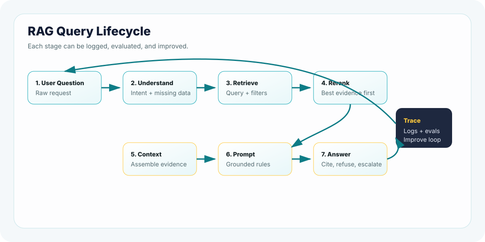

The RAG Query Lifecycle
A RAG answer does not appear in one magical jump. It travels through a pipeline: understand the question, retrieve evidence, build context, prompt the model, answer with citations, and then evaluate what happened.
How to read this chapter
- Read it as a debugging map: every lifecycle stage is a place where quality can improve or fail.
- Separate offline and online work: indexing prepares knowledge; query execution answers users.
- Track artifacts: intent, filters, retrieved sources, reranked sources, context, prompt version, answer status, citations, latency, and cost.
- Keep production in view: a lifecycle is only useful when it can be logged, tested, operated, and improved after launch.
Why This Topic Matters
- The final answer is only the last visible step of a longer system.
- Bad retrieval, weak metadata, stale indexes, or poor context assembly can all look like "model hallucination."
- A production team debugs the lifecycle stage by stage, not by guessing.
When a RAG assistant gives a wrong answer, many teams jump straight to "the model hallucinated." Sometimes that is true. Very often, the real failure happened earlier: the query was vague, metadata was missing, the wrong chunks were retrieved, or the prompt did not clearly separate evidence from instructions.
The lifecycle gives us a map. Instead of blaming the whole system, we can ask: where did the request go wrong?
Simple explanation
The RAG query lifecycle is the journey from user question to grounded answer. Each step changes the quality, cost, latency, and safety of the final response.
Go Deeper: why "the model hallucinated" is often the wrong diagnosis
If the retriever never fetched the right document, the model may still produce a fluent answer from weak evidence. If the prompt mixed user text and source text unclearly, the model may follow the wrong instruction. If citations were generated after the answer instead of tied to retrieved chunks, the answer may look grounded but not be grounded. The lifecycle helps you isolate the real failure.
Real-Life Analogy: A Receptionist Routing a Request
Imagine walking into a large company and asking, "Can I access customer logs during an incident?" A good receptionist does not answer from memory. They ask what team you are on, what incident level it is, which customer region applies, and who can approve the request. Then they route you to the correct policy owner or document.
That is the RAG lifecycle. The assistant is not just writing. It is routing, filtering, gathering evidence, and deciding whether the answer is safe enough to give.
- The assistant should route and gather evidence before answering.
- User role, region, incident severity, and approval state can all change the correct answer.
- A good lifecycle turns vague user input into traceable system decisions.
Technical Explanation
A production RAG request usually moves through these stages:
Text diagram: lifecycle in one screen
User question
-> query understanding
-> retrieval query + metadata filters
-> vector / keyword / hybrid retrieval
-> reranking and context assembly
-> grounded prompt
-> model answer
-> citations, refusal, or escalation
-> logs, evals, and improvement loopNotice something important: the lifecycle is not only the online request. A serious RAG product has two connected pipelines. The offline pipeline prepares knowledge; the online pipeline answers user questions.
Two-pipeline view
Offline indexing pipeline
source docs -> parse -> clean -> chunk -> enrich metadata
-> embed / index -> validate freshness -> publish index version
Online query pipeline
user question -> intent -> filters -> retrieve -> rerank
-> assemble context -> grounded prompt -> answer/refuse
-> citations -> trace logs -> eval feedbackThis is where many beginner explanations become too small. They say "retrieve then generate," but production engineers ask sharper questions: Which index version did we search? Which retrieval strategy did we use? Which filters were applied? Did reranking help or hurt? Did the final citation actually support the answer?
Question
The raw user request. It may be clear, vague, risky, or missing key details.
Retrieval Query
The search-ready form of the question, often enriched with filters and intent.
Context
The retrieved evidence that the model is allowed to use for the answer.
Grounded Answer
The model response, shaped by instructions, context, citations, and refusal rules.
Production-level example
User asks: "Can a contractor in Germany access customer logs during a Sev1 incident?" A production lifecycle should not simply search for "contractor logs." It should infer the risky intent, apply region and role filters, retrieve both the access policy and incident runbook, check whether the user is allowed to see those sources, and return an answer that cites the rule or escalates to the incident commander.
Production failure mode
The online pipeline retrieves a good source but loses the source id during context assembly, so the final answer cannot cite it correctly.
Engineering checklist
- Carry source metadata through every stage.
- Separate source text from user text in the prompt.
- Log answer status: answered, refused, escalated, or needs clarification.
Metrics to watch
Context utilization, citation support rate, source-id preservation, unsupported-answer rate, and end-to-end p95 latency.
Architecture View

In real systems, the lifecycle may include query rewriting, access checks, hybrid search, reranking, cache lookup, safety checks, and telemetry. But the core idea stays the same: retrieve reliable evidence before generating a grounded answer.
Execution Pipeline: What Actually Runs
In a production application, the lifecycle becomes an execution pipeline. That means every step has an owner, input, output, failure mode, and telemetry. This is the difference between a demo and a system you can operate.
Pipeline contract
Each stage should produce a small artifact: intent label, filters, candidate source ids, reranked source ids, context block, prompt version, answer status, citation ids, refusal reason, latency, and cost.
Traceable execution contract
{
"request_id": "req_042",
"intent": "security_access",
"filters": {"region": "EU", "role": "contractor"},
"retrieved": ["access_policy", "sev1_runbook"],
"reranked": ["sev1_runbook", "access_policy"],
"answer_status": "escalated",
"citations": ["access_policy", "sev1_runbook"],
"latency_ms": 842,
"first_metric_to_check": "paired_source_recall"
}When something goes wrong, this trace tells the team where to look. If the right source is absent, retrieval or indexing failed. If the right source is present but the answer ignores it, prompt grounding or generation failed. If the answer cites a source that was not retrieved, citation control failed.
Go Deeper: what a good RAG trace should let you answer
A useful trace should answer five questions quickly: what did the user ask, what route did the system choose, which sources entered the prompt, what answer policy was applied, and what evidence supports the final response. If your trace cannot answer those questions, production debugging becomes slow and subjective.
Retrieval Decisions Inside the Lifecycle
Retrieval is not one decision. It is a bundle of engineering decisions that shape the whole product.
Indexing Strategy
How documents are chunked, embedded, versioned, and published into an index.
Retrieval Strategy
Vector search, keyword search, hybrid search, query routing, or multi-query retrieval.
Reranking Strategy
Retrieve more candidates, then reorder them so the strongest evidence reaches the model.
Context Strategy
Choose how much evidence to send, in what order, with which source labels.
- Vector search catches meaning, but can miss exact policy terms.
- Keyword search catches exact terms, but can miss paraphrases.
- Hybrid search improves coverage, but adds tuning complexity.
- Reranking improves precision, but adds latency and cost.
- More context improves recall, but can distract the model.
Later chapters go deep into indexing and retrieval strategies. Here, the key point is placement: indexing prepares the searchable knowledge, and retrieval chooses what evidence enters the online lifecycle.
One access question, four retrieval decisions
Question: "Can a contractor access EU customer logs during Sev1?"
- Metadata: region is EU, role is contractor, incident level is Sev1.
- Sources: access policy and incident runbook are both required.
- Retrieval: hybrid search may be needed because "Sev1" is an exact operational term.
- Reranking: policy and runbook should outrank generic logging docs.
The lesson: retrieval is not only "find similar text." It is applying business constraints before the model sees evidence.
Production Considerations
- Latency: retrieval, reranking, and generation all add time.
- Cost: larger context windows and more model calls increase spend.
- Access control: retrieval must not fetch documents the user cannot see.
- Freshness: stale indexes can produce outdated answers.
- Observability: log the question, retrieved source ids, rank, answer status, and refusal reason.
- Evaluation: test retrieval and answer quality separately.
- Pipeline ownership: define who owns ingestion, retrieval, prompt behavior, evals, and release gates.
Production adoption checklist
Before a RAG lifecycle is ready for real users, you should be able to answer: What documents are approved? How fresh is the index? What access controls are enforced? What happens when retrieval is weak? Which evals block release? What logs prove the answer was grounded?
Senior builder habit: never debug the final answer alone. First inspect what the system retrieved. Then inspect the prompt. Then inspect the model output.
Separate retrieval and answer evals
Do not ship only because final answers look good. Track whether the correct evidence was retrieved before measuring whether the generated answer was acceptable.
Watch drift after launch
Policy updates, new documents, changed terminology, and user behavior can all degrade retrieval quality even when code has not changed.
Common Mistakes
1. Treating the lifecycle as one black box
If you cannot see retrieval results, you cannot debug grounding.
2. Retrieving too much context
More chunks can improve recall, but they can also add noise and cost.
3. Forgetting metadata
Region, role, version, and document status often matter as much as semantic similarity.
4. Evaluating only the answer
A beautiful answer can hide a retrieval failure. Evaluate both.
5. Treating indexing as a one-time setup
Indexes need refresh rules, versioning, validation, and rollback just like application releases.
6. Hiding the trace
If the product team cannot inspect source ids, scores, filters, and answer status, failures become guesswork.
Mini Assignment
Pick one real product scenario: HR policy, customer support, security runbook, developer docs, or sales enablement. Write the lifecycle for one user question. Include the retrieval query, metadata filters, expected source, citation rule, refusal rule, and first metric you would inspect.
Points To Remember
- The lifecycle is the RAG request journey from question to evaluated answer.
- Retrieval quality shapes answer quality.
- Metadata filters make retrieval safer and more precise.
- Refusal and escalation are part of the lifecycle.
- Production RAG needs observability at every stage.
Next, test the lifecycle vocabulary and production decisions in the quiz. After that, you will map real scenarios through the full flow.